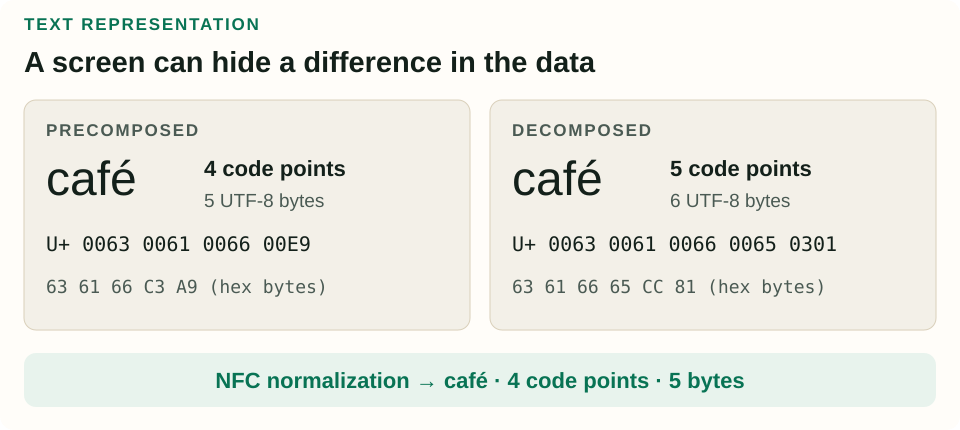
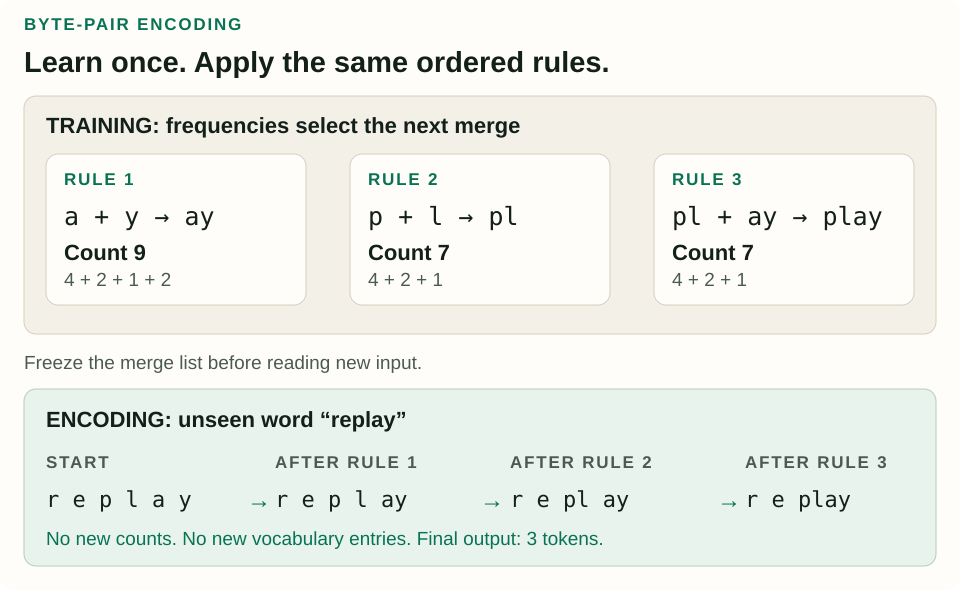
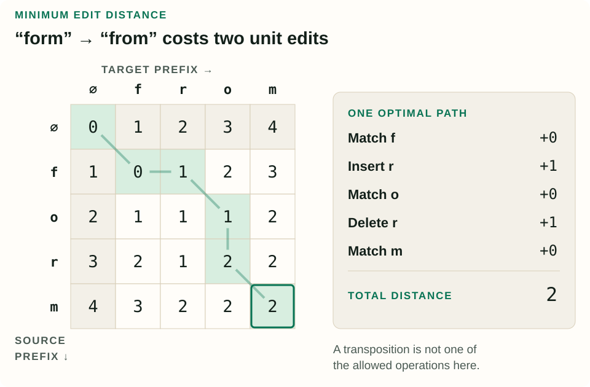

Words and Tokens: How Text Becomes Model Input
Before a model can predict the next token, somebody has to decide what a token is. That decision changes vocabulary size, sequence length, the treatment of unfamiliar words, and even what “one character” means.
Reading companion. This original tutorial accompanies Chapter 2 of Daniel Jurafsky and James H. Martin’s Speech and Language Processing, third-edition draft, released August 19, 2026. The source chapter covers words and morphology (§§2.1–2.2), Unicode (§2.3), BPE (§2.4), corpora (§2.5), regex and segmentation (§§2.6–2.8), and edit distance (§2.9). The examples and diagrams below are newly constructed.
1. What are we counting?
Imagine a tiny corpus, meaning a collection of text chosen for analysis:
small robots build small robotsWith spaces as boundaries, there are five word instances and three word types: small, robots, and build. An instance is one occurrence at a particular position; a type is a distinct value. The vocabulary is the set of types. We can write the instance count as N = 5 and the vocabulary size as |V| = 3.
Older NLP writing often calls word instances “word tokens.” Here, following the current chapter’s terminology, token means a unit emitted by a tokenizer. If our imaginary tokenizer splits robots into robot | s, the same sentence contains seven model tokens. Neither count contradicts the other: they measure different units.
| Question | Answer | What was fixed? |
|---|---|---|
| How many space-separated occurrences? | 5 | Our word-boundary rule |
| How many distinct spellings? | 3 | That boundary rule and case handling |
| How many model input units? | 7 in this toy tokenizer | The exact tokenizer vocabulary and rules |
Now add Robots, robotics, and a new product name to the corpus. The number of types depends on whether we preserve case, and it can keep increasing as new documents arrive. A word-level vocabulary fixed yesterday may encounter a new spelling today. Replacing every unfamiliar word with one <UNK> symbol loses the difference between those spellings.
Subwords offer a useful compromise: store recurring pieces, then compose unfamiliar strings from those pieces. But a subword is not necessarily a meaningful word part. In painters, a linguistic analysis might identify paint + er + s; -er forms a person noun and -s marks plural. A learned tokenizer might instead choose pain | ters. Statistical convenience and morphological analysis answer different questions.
The corpus also determines what becomes frequent. A tokenizer trained mostly on recipes will see a different distribution from one trained on software logs. Record where the text came from, its languages, its time period, and its cleanup rules. A token count without that context can look precise while hiding an arbitrary measurement choice.
Check yourself: Does duplicating our original sentence double its vocabulary?
No. The instance count becomes 10; the vocabulary still contains the same three types. A statistic such as the type-to-instance ratio therefore changes with corpus length, even when the underlying text distribution has not changed.
2. Text has several layers
A displayed character, a Unicode code point, a byte, and a model token are different things. For example, the visible word café can use a precomposed é, or an e followed by a combining acute accent. Those forms can look identical while having different sequences of code points.

UTF-8 encodes code points as bytes. In our example, the ASCII letters each take one byte; é uses the two bytes C3 A9. The decomposed form has an extra code point and uses 65 CC 81 for the final visible letter. That is why Python’s len(text) and len(text.encode("utf-8")) can disagree.
Normalization chooses a consistent representation for specified equivalences. NFC uses canonical equivalence; NFKC also folds compatibility distinctions, such as converting a circled digit to an ordinary digit. Such folding can remove information, so choose it according to the task. Normalizing is a different operation from lowercasing or removing accents. See the Unicode normalization specification.
import unicodedata
composed = "caf\u00e9"
decomposed = "cafe\u0301"
assert composed != decomposed
assert (len(composed), len(decomposed)) == (4, 5)
assert len(composed.encode("utf-8")) == 5
assert len(decomposed.encode("utf-8")) == 6
assert unicodedata.normalize("NFC", decomposed) == composedA grapheme cluster approximates a user-perceived character: the decomposed e and its accent belong together. Grapheme boundaries help with cursor movement and truncation. Word and sentence boundaries are different segmentation problems; spaces alone do not solve them across writing systems. Unicode provides default boundary rules, while some languages and tasks need tailoring. See Unicode text segmentation.
A concrete failure to avoid: truncating the decomposed example after four code points produces cafe, dropping the accent. Counting grapheme clusters would keep the accent attached. Token limits, meanwhile, must be measured with the model’s tokenizer. A character limit cannot reliably substitute for a token limit.
3. Learn a tokenizer by hand
Byte-pair encoding, or BPE, repeatedly turns a frequent adjacent pair into a new symbol. Its use for neural translation helped make rare words representable through smaller pieces; see Sennrich, Haddow, and Birch (2016). We will work through a character-based teaching version. It ignores spaces, permits merges only within each word, preserves word frequencies, and stops after three merges.
| Word | Frequency | Initial symbols |
|---|---|---|
| play | 4 | p l a y |
| played | 2 | p l a y e d |
| player | 1 | p l a y e r |
| stay | 2 | s t a y |
First count pairs, weighted by frequency. The pair a y appears once in each word type, but its corpus count is 4 + 2 + 1 + 2 = 9. Counting only the four dictionary rows would incorrectly give 4. The pairs p l and l a each occur 4 + 2 + 1 = 7 times; y e occurs 3 times.
Merge a + y → ay. The strings now contain p l ay, p l ay e d, p l ay e r, and s t ay. Recount adjacent pairs in these updated strings. p l and l ay tie at 7. We explicitly break this tie in favor of p l. A reproducible implementation must define its tie behavior.
Merge p + l → pl. Now pl ay has count 7, so our third merge is pl + ay → play. The learned additions are ay, pl, and play. Keep the original character symbols too: rare strings still need them.

We can check the arithmetic another way. Initially the corpus contains 4×4 + 2×6 + 1×6 + 2×4 = 42 symbols. The three merges remove 9, then 7, then 7 symbol occurrences, leaving 19 tokens. Directly counting the final strings agrees: 4×1 + 2×3 + 1×3 + 2×3 = 19. Our starting alphabet has nine characters; adding three symbols gives a vocabulary of twelve.
Encoding does not retrain the tokenizer
Now encode replay, a word absent from training. Start with r e p l a y. Apply the stored rules in order: r e p l ay, then r e pl ay, then r e play. The output is three tokens, even though the full word never occurred in the corpus.
If we receive a thousand copies of replay tomorrow, ordinary encoding still emits the same three tokens for each copy. It does not promote replay to a new vocabulary entry. Learning a new entry would be tokenizer training, which changes the input representation and its mapping to model parameters.
Our toy alphabet cannot represent z because training never supplied it. A character tokenizer needs an unknown-character policy. A byte-based tokenizer can instead begin with all 256 byte values: every UTF-8 input then has a byte representation, even when its word or script was unseen. Individual byte tokens need not themselves decode into complete characters; concatenate their bytes before decoding the full sequence.
Real tokenizers also preserve spaces, use special tokens, and often restrict merges through pretokenization rules. Our example omits those details deliberately. A larger vocabulary can shorten sequences, but it also gives the model more token identities to learn and predict. And short token sequences are not guaranteed to correspond to clean linguistic units: a fourth merge here would join play + e, whose count is 3.
Check yourself: After three merges, how does “stayed” tokenize?
s | t | ay | e | d. The first rule applies; the other two do not. All characters exist in our alphabet, so the unseen word is representable. Neither stay nor ed is a learned token in this three-merge vocabulary.
4. Rules before learned merges
A regular expression describes a pattern of text. It is useful when we already know a rule: recognize a run of digits, preserve an apostrophe inside an English contraction, or split punctuation into separate pieces. Such rules can create the chunks within which BPE is allowed to merge.
Here is a deliberately limited tokenizer for ASCII English words, decimal numbers, and individual remaining non-space characters. The number alternative comes first so a decimal stays together.
import re
from collections import Counter
pattern = r"[0-9]+(?:\.[0-9]+)?|[A-Za-z]+(?:'[A-Za-z]+)?|[^\w\s]"
text = "Don't split 12.50, please!"
pieces = re.findall(pattern, text)
assert pieces == ["Don't", "split", "12.50", ",", "please", "!"]
counts = Counter(pieces)
assert counts[","] == 1| Pattern | Meaning here |
|---|---|
[0-9]+ | One or more ASCII digits |
\. | A literal period |
(?:…)? | An optional group without capture |
A|B | Try alternative A, then B |
[^\w\s] | A character that is neither a word character nor whitespace |
In Python, findall returns matches; it does not promise to cover the input. Its default Unicode-aware \w includes alphanumeric characters and underscore, while [A-Za-z] is explicitly ASCII. Consequently, our pattern silently drops the accented letter from café and drops underscores. That is a useful failing case, not a multilingual tokenizer. Verify behavior against the Python regex documentation.
A production tokenizer needs a specified policy for every relevant input: curly apostrophes, mixed scripts, emoji, code, dates, and spaces. Preserve unmatched spans when inspecting a rule, and check that no content disappears unintentionally. Word splitting is also different from sentence segmentation: the periods in Dr. Rao paid 12.50. do not all end sentences.
5. Turn spelling differences into a distance
Suppose a search box receives form where the user meant from. We can compare strings by the cheapest sequence of edits that transforms one into the other. Here, insertions, deletions, and substitutions cost 1; matching identical characters costs 0. These choices define unit-cost Levenshtein distance.
Let D(i, j) be the minimum cost of converting the first i characters of source x into the first j characters of target y. The empty-prefix cases are D(i, 0) = i and D(0, j) = j: deleting or inserting the entire prefix is the only option.
D(i, j) = min of:
- D(i−1, j) + 1 — delete the last source character
- D(i, j−1) + 1 — insert the last target character
- D(i−1, j−1) + [xi ≠ yj] — match or substitute
The bracket is 0 for equal characters and 1 otherwise.
Why do these three possibilities suffice? Every complete edit sequence has a final step. If that step deletes, inserts, or aligns the final characters, the preceding work solves the corresponding smaller prefix problem. Keeping the cheapest solution for each prefix lets us reuse it, instead of enumerating every possible edit sequence.

For example, D(2, 3) compares fo with fro. Deleting gives D(1, 3) + 1 = 3; inserting gives D(2, 2) + 1 = 2; matching the final o gives D(1, 2) + 0 = 1. We store the minimum, 1.
The bottom-right cell gives distance 2. One path inserts r after f, then deletes the original r: form → frorm → from. Another path substitutes the two middle letters. Swapping adjacent characters would be a single operation under a distance that allows transposition, but transposition is absent from our recurrence. The permitted operations matter as much as the algorithm.
def edit_distance(source, target):
previous = list(range(len(target) + 1))
for i, left in enumerate(source, start=1):
current = [i]
for j, right in enumerate(target, start=1):
current.append(min(
previous[j] + 1, # delete
current[j - 1] + 1, # insert
previous[j - 1] + (left != right)
))
previous = current
return previous[-1]
assert edit_distance("form", "from") == 2
assert edit_distance("", "cat") == 3For lengths m and n, filling the table costs O(mn) time. This implementation keeps only two rows, using O(n) space. It returns the score; recovering an alignment requires additional bookkeeping or a reconstruction algorithm. It also compares Python code points, so normalization and the choice of comparison unit still matter.
Check yourself: What is the distance between the two versions of “café” before and after NFC normalization?
With code points and the unit costs above, the raw distance is 2: replace the precomposed é with e, then insert the combining accent. After normalizing both strings to NFC, the distance is 0. The score reflects the representation supplied to the algorithm.
6. Put the pieces together
For a small experiment, begin with a few sentences containing repeated words, a decimal, a contraction, an accented word in both representations, and an unfamiliar name. Keep the original text. State the normalization policy, inspect the segmentation, count occurrences and distinct types separately, then trace the learned merges on a held-out string.
For a pretrained model, use its supplied tokenizer and preprocessing. Token IDs are tied to learned parameters; independently inventing a “better” segmentation does not preserve that interface. When comparing datasets or model losses, record the tokenizer too: two systems can assign different token counts to the same text.
You now have the pieces needed for the next chapter. Once a corpus becomes a sequence of defined units, we can count their contexts and turn counts into probabilities. N-gram language models make that step explicit.